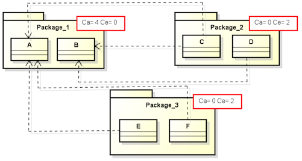

Efferent Coupling (Ce)
Efferent Coupling between packages (Ce) measures the total number of external classes coupled to classes
of a package due to outgoing coupling (coupling to classes external classes of the package,
uses CBO definition of coupling). Each class counts only once. Zero if the package does not
contain any classes or if external classes are not used by the package's classes.

To calculate the value of Ce, we must count the amount of classes dependent on other packages inside
the analyzed package. For example, Package_2 has two classes C and D (see figure above). First, define the
sets of classes that depend on classes C and D. In this case, the sets are {A, B} and {B} respectively.
Considering Package_2, the value of Ce is equal to 2. It means there are two classes inside Package_2,
having external dependencies.
According to
Software Metrics: A Practical Guide for the Curious Developer. www.codacy.com/ebooks/guide-to-code-quality
preferred values for the metric Ce are in the range of 0 to 20, higher values cause problems with care and development of code.
Included in the set of metrics proposed by Robert C. Martin,
see
Martin, R. C. OO design quality metrics. An analysis of dependencies. 28 October 1994.
Martin, R. C. Agile Software Development: Principles, Patterns, and Practices.
Alant Apt Series. Prentice Hall, Upper Saddle River, NJ, USA 2002
- Highly Related Software Quality Properties
-
- Re-Usability
-
is negatively influenced by coupling.
- Understandability for Reuse:
-
A part of a system that has a high (outgoing)
efferent coupling may be highly inversely related
to understandability, since it uses other parts
of the system which need to be understood as
well.
Understandability decreases with increasing Ce.
- Attractiveness:
-
Parts that have a high (outgoing) efferent
coupling may be highly inversely related to
attractiveness, since they are using other parts
of the system which need to be understood as
well, and represent dependencies.
Attractiveness decreases with increasing Ce.
- Maintainability
-
decreases with increasing Ce.
- Analyzability:
-
Parts that have a high (outgoing) efferent
coupling may be highly inversely related to
analyzability, since they are using other parts
of the system which need to be analyzed as well.
Analyzability decreases with increasing Ce.
- Changeability:
-
Parts that have a high (outgoing) efferent
coupling may be inversely related to
changeability, since they are using other parts
of the system which might need to be changed as
well.
Changeability decreases with increasing Ce.
- Stability:
-
Parts showing a high (outgoing) efferent coupling
may be inversely related to stability, since they
are using other parts of the system, which are
can affect them.
Stability decreases with increasing Ce.
- Testability:
-
Parts that have a high (outgoing) efferent
coupling may be highly inversely related to
testability, since they are using other parts of
the system which increase the number of possible
test paths.
Testability decreases with increasing Ce.
- Portability
-
decreases with increasing Ce.
- Adaptability:
-
Parts that have a high (outgoing) efferent
coupling may be inversely related to
adaptability, since they are using other parts of
the system which might need to be adapted as
well.
Adaptability decreases with increasing Ce.
- Related Software Quality Properties
-
- Functionality
-
is both negatively and positively influenced by
coupling.
- Interoperability:
-
Parts that have a high (outgoing) efferent
coupling may be directly related to
interoperability, since they are
using/interacting with other parts of the system.
Interoperability might increase with increasing Ce.
- Security:
-
Parts that have a high (outgoing) efferent
coupling may be inversely related to security,
since they can be affected by security problems
in other parts of the system.
Security might decrease with increasing Ce.
- Reliability
-
might decrease with increasing Ce.
- Fault-tolerance:
-
Parts that have a high (outgoing) efferent
coupling may be inversely related to
fault-tolerance, since they can be affected by
faults in other parts of the system.
Fault-Tolerance might decrease with increasing Ce.
- Recoverability:
-
Parts that have a high (outgoing) efferent
coupling may be inversely related to
recoverability, since their data is distributed
in other parts of the system making their
recovery difficult.
Recoverability might decrease with increasing Ce.
- Re-Usability
-
might decrease with increasing Ce.
- Learnability for Reuse:
-
Parts that have a high (outgoing) efferent
coupling may be inversely related to
learnability, since they are using other parts of
the system which need to be understood as well.
Learnability might decrease with increasing Ce.
- Operability for Reuse -
Programmability:
-
Parts that have a high (outgoing) efferent
coupling may be inversely related to
learnability, since they are using other parts of
the system, which represent dependencies.
Programmability might decrease with increasing Ce.
- Efficiency
-
might decrease with increasing Ce.
- Time Behavior:
-
Parts that have a high (outgoing) efferent
coupling may be inversely related to time
behavior, since they are using other parts of the
system, thus execution during test or operation
does not stay local, but might involve huge parts
of the system.
Time behavior might get worse with increasing Ce.
- Resource Utilization:
-
Parts that have a high (outgoing) efferent
coupling may be inversely related to resource
utilization, since they are using other parts of
the system, thus execution during test or
operation does not stay local, but might involve
huge parts of the system.
Resource utilization might get worse with increasing Ce.